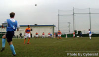
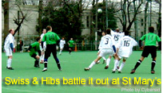
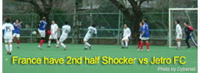

YC&AC SINK SWISS
Jan 31st, YC&AC. Swiss Kickers were sent to their first league defeat
in 3 years by new boys YC&AC. Recovering well from last weeks unlucky defeat to Sala, YC&AC took advantage of the Swiss' depleted
squad going into a 4-1 lead, before letting in a soft goal just before the end. At the same time at St. Mary's, Hibernian really went to town on
Jetro FC, beating them 5-0 to go back to the top of the table.
OiFuto Daiichi In Division 2, Perfidious Albion maintained their 100% record by coming back from a goal down to the Dutch and winning 2-1. The Dutch looked very lively from the start, soon going up with Albion not seeming to find their form. It wasn't till the 2nd half and the introduction of veteran Simon Woolhouse that the tables turned. The Dutch defence seemed to lose their bearings as the Albion forwards harried them into giving away a couple of goals from nothing. BFC Vagabonds kept the pressure on Albion though, as they held on for an undeserved 1-0 victory over Barbarians. With both teams hitting the post and bar (not necessarily from the opposition!) the game see-sawed from end to end but it was the Barbarians who were most organized, mounting countless attacks. A combination of good defending and lack of finishing meant the game was decided in the 1st half, by a Vagabonds free kick, tucked inside the bottom left corner. more...
DOUBLE BLOW FOR YC&AC IN OPENER
Jan 25th, YC&AC. Both the 1st & 2nd teams of YC&AC. got a rude introduction to the TML, losing 1-0 & 2-0 respectively. The 2nd team, not in the TML this year, had a 'friendly' with Geckoes from Div 2, to get a feel for the league they plan to join next season. The Geckoes were in no mood to show any mercy though. Big Rob, leading the geckoes from an unusual role as goalkeeper, was determined to keep a clean sheet and even Simon Jelfs rose to the occasion, heading home their 2nd.
In the main match, between SALA FC & YC&AC 1st team, it was a tough match from the word go. As expected the mid-field battle was very intense but SALA should have taken the lead when striker Giles Legg was given a free header in the 6 yard box, only to see the keeper pull off a great reflex save.
Despite being a bit hungover, with a manager exuding pure alcohol fumes, SALA got their break in the 2nd half when Brooke-Smith curled in a probing free-kick that was just tipped over the outstretched arms of the keeper by unlucky YC&AC centre back Steve Taw. It was a tough introduction to the league for YC&AC, who till now, never played in an International league in Japan.
DUTCH VERY HAPPY ON GRASS!
|  |
|
The Dutch swing in a free kick in their match against Barbarians at YC&AC
|
Jan 24th, YC&AC. The first TML match to be played on YC&AC's grass pitch, also saw the Dutch Embassy team finally get their first game in the league. They made quick work of scoring their first goal too, putting one in within the opening minutes. Goal scorer, So Takada, went on to become the first Hat-trick scorer of the league, calmly putting away a couple of penalties later to win the match 3-2.
Barbarians weren't an easy nut to crack though, with the game going end to end. The Dutch Keeper pulled off a fantastic penalty save in the 1st half while at the other end they had a free kick hit the bar. For more from barbarians...click
Ina Saitama The 8-man NOVA team, heavily hit by flu, gave the Saitama Jets an early scare by going into a 1-0 lead at Ina. The JETS finally found their shooting boots, scoring their first goals in the TML as they raced into a 4-1 lead. The goals included a goal straight from a corner kick, which NOVA were convinced did not cross the line. Dave Campbell, after scoring his first JETS goal for around 3 years, then tried to even things up by carefully placing the ball past his own keeper near the end to make it 4-2.(rep by G Garner) more...
St Mary's Afternoon action saw BFC meet Div 1 leaders Jetro FC in only their 2nd ever meeting. In a game played mainly in the midfield, the chances at either end were sparse. Peter 'juice' Adolphus produced the most exciting moment of the match with a bicycle kick only clearing the bar by millimeters. BFC's captain, Brian Doyle, proved the inspiration for both goals, the 2nd when he was knocked to the ground by an over zealous Jetro defender, protecting his keeper but giving away a penalty instead. The 2-0 scoreline puts BFC back on top of the table. more...
France FC must be wondering what they have to do to gain a point. This time they put up a great 1st half battle against the Hibs, unlucky not to go ahead - Hibs saved by their great keeper, Hitoshi Ono, and the woodwork. With Dave Thomas on the prowl up front for Hibs though, you must be wary at the back as France found out in the 2nd half. Dave's first time shot as he latched onto a through ball gave Elliot, the french goalie, no chance. Unable to reply, the French were sent to their 3rd defeat in a row, while the Hibs join 3 others on 6 points at the top of the table. French report......Hibs
TEAMS LOSE WAY IN BLIZZARD!
Jan 17th, St Mary's. Hibernian couldn't take advantage of an early goal, and their best chance in recent times, to beat a Swiss Kickers team missing their top strikers. A couple of blunders allowed Swiss to take the lead and despite consistent heavy pressure from Hibernian, they managed to cling on to go top of the table.
Swiss report...
France FC also blew a 2 goal lead, with a 2nd half collapse against Jetro FC who join Swiss at the top. In similar fashion to last weeks game against the Swiss, after putting up a fine display in the 1st half, they allowed Jetro to steal a goal just before the break. In the 2nd half, poor marking was punished by the speedy Jetro players as they put away another 3.
In a game with 3 penalties and the start of a blizzard, Nova held Vagabonds to a 3-3 draw. There was a lot of shouting about the dubiousness of a couple of the calls, but they cancelled one another out as the game came down to defensive errors more than striking prowess. On and off snow showers continued during the day, and there were 2 more draws, Maritizio v Nelson and JETs v Shane.
 Geckoes vs Perfidious Albion turned into an epic battle. Blood started to boil as Geckoes felt the refs decisions were going against them and the more they complained, the worse it seemed to get. With Kazu seeming to have left part of his brain behind along with his flags that morning, Geckoes felt they were the ones being hard done by, while Albion just kept their mouthes shut and got on with the task in hand. in a tight game that could have gone either way, it came down to a couple of defensive errors to let Albion score 3 times again, to go to the top of the Division 2 table. Funny how these Perfidious Boys bear more resemblance to BEFC of old, we'll have to talk about a name change for next season perhaps.
OPENING ROUND SEES BFC ON TOP
Jan 11th, OiFuto DaiNi. Both of the BFC teams started their campaigns brightly, with Maritizio being overpowered 5-0 in Division 1 by a BFC squad, showing the same good form, that won them the World Motors Cup in December. JETs were unable to field a strong squad and were punished by a solid looking BFC Vagabonds 5-0, shooting Vags strait into pole position in Division 2. Wall Street Geckoes surprised the Kanto Celts in the opening minutes of their match, scoring the fastest goal of the league so far then going on to win. Geckoes report & pics...
The new PUMA balls came to the rescue of Perfidious Albion, as Shane FC striker, James knight, saw his perfect lob of the keeper, hit the hard astroturf and bounce clear over the bar. This allowed Albion to regroup and go on to win the match comfortably. Other winners were Jetro who out played Nelson FC and Nova FC who just scraped past Barbarians as the wind really picked up on a chilly winters evening.
The first round of the TML went off very smoothly thanks to all the help from the referees and managers. Things are shaping up for an exciting season.
LOTS OF GOALS ON OPENING DAY
Jan 10th, St Mary's. Both Hibernian and Swiss got off to perfect starts as they beat Sala & France FC respectively. The opening match of the TML was a great battle between Sala and Hibs, 2 fierce rivals. After a pretty even 1st quarter, Hibs opened the scoring through Keita Narama, who went on to score another in their 3-0 victory. Sala were sorely missing a couple of players still away for New Year break.
France vs Swiss was another tough battle, with France having the best chances in the 1st half, hitting the bar twice. It was a different story in the 2nd half though, as Swiss seemed to overwhelm the French scoring 5 with just 1 in reply. More... or the French report
Swiss Kickers Sponsor Bernd was looking pleased on the touch line, with the Swiss proudly wearing their new German strip provided by Bernd's Bar. It was also good to see Neil Day from our sponsor PADDY FOLEYS there to cheer his team Hibernian along. We hope you'll see more of Neil and our many other sponsors, by taking advantage of the many DISOUNTS offered by them to card carrying members of TML.
FATBOYS PULL OUT AT LAST MINUTE
Jan 9th, Tokyo. The league was almost thrown into turmoil, before it even started, when Fatboys FC (a.k.a. British School dads) decided to pull out of the league Friday. Citing a lack of commitment from the players, the manager decided to pull out now rather than cause a bigger problem further down the line. With nothing to be done about this weekend, TML is having to now rethink the schedule for the coming weeks, something we'd hoped was fixed already. Well, these are the teething problems with a new league, we hope all teams will try to be flexible to accommodate this new challenge.
IT's OFFICIAL - PUMA BALLS!
 Dec 25th, Tokyo. A merry Christmas from PUMA means new balls for the new league. Dec 25th, Tokyo. A merry Christmas from PUMA means new balls for the new league.
PUMA, the major sports manufacturer, have shown their backing to Tokyo Metropolis league, by agreeing to supply the league with match balls. They will also give prizes for awards such as golden boot amongst others. Puma have supported other amateur competitions, like the Copa Chile, for many years and they are excited about this new project. We look forward to kicking off the league with PUMA balls, on January 10th.
|